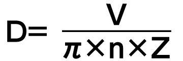

Inverters-FREQROL-A800 Plus Series -FREQROL-A800 Plus for Roll to Roll- Penyederhanaan sistem

Penyederhanaan sistem 
Inverter FR-A800-R2R memiliki berbagai fungsi khusus seperti perhitungan diameter lilitan, yang menyediakan kontrol lilitan/pelepasan lilitan yang stabil secara independen.
Perhitungan diameter lilitan
Diameter lilitan saat ini untuk poros lilitan/pelepasan lilitan dihitung dari kecepatan saluran aktual atau kecepatan motor aktual.
Pemilihan masukan perintah kecepatan saluran / pemilihan masukan kecepatan saluran aktual
Perintah kecepatan saluran dan kecepatan saluran aktual yang diperlukan untuk menghitung diameter lilitan dapat dimasukkan melalui terminal masukan analog atau opsi plug-in.
Pemilihan fungsi perhitungan diameter lilitan
Metode perhitungan diameter lilitan dapat dipilih untuk meningkatkan kinerja kontrol tegangan.
-
Metode perhitungan kecepatan saluran aktual
Diameter lilitan dihitung dari kecepatan saluran dan kecepatan utama (kecepatan motor aktual).
 - Metode perhitungan ketebalan
Ketebalan material dijumlahkan untuk menemukan diameter lilitan keseluruhan.
D = Diameter awal ± 2 × d × N × Z
Perhitungan diameter lilitan awal
Jika diameter lilitan berubah setelah perubahan material atau yang lainnya, diameter lilitan saat ini dihitung dengan dua cara berikut.
- Diameter lilitan saat ini dihitung berdasarkan gerakan gulungan penari pada awal dari posisi batas bawah ke posisi target.
- Diameter lilitan saat ini dihitung dari kecepatan saluran dan kecepatan motor aktual. (Sistem harus dimulai pada kecepatan rendah.)
Penyimpanan diameter lilitan / panjang lilitan
Nilai sekarang dari diameter lilitan dan panjang lilitan/pelepasan lilitan dapat disimpan.
Nilai diameter lilitan dan panjang lilitan disimpan dalam inverter bahkan selama daya dimatikan.
Kontrol kecepatan umpan balik penari/Kontrol kecepatan umpan balik sensor tegangan
Kontrol PID dilakukan menggunakan umpan balik dari posisi gulungan penari yang terdeteksi atau umpan balik dari sensor tegangan.
Kontrol yang stabil dapat dicapai dalam kombinasi dengan kalkulasi diameter lilitan.
Kompensasi penguatan proporsional kontrol kecepatan
Dengan menyesuaikan penguatan proporsional kontrol kecepatan sesuai dengan diameter lilitan, tingkat respons dapat dijaga tetap konstan.
Penyetelan penguatan PI tegangan
Dengan menyesuaikan penguatan PI tegangan secara otomatis untuk kontrol PID, waktu yang dibutuhkan untuk penyesuaian berkurang secara signifikan.
Siapa pun dapat memulai sistem dengan mudah.
Deteksi kesalahan posisi gulungan penari
Ketika material pecah (patah) dan nilai umpan balik sensor (umpan balik penari/tegangan) dipertahankan pada batas atas/bawah untuk jangka waktu tertentu, sinyal deteksi putus akan dikeluarkan.
Kontrol torsi tanpa sensor tegangan / Kontrol torsi umpan balik sensor tegangan
Torsi keluaran motor dikontrol sehingga tegangan yang diterapkan pada material bersifat konstan dengan menghitung diameter lilitan gulungan.
Fungsi kompensasi kerugian mekanis
Ketegangan yang diterapkan pada material dijaga konstan dengan menaikkan torsi yang diperintahkan untuk mengimbangi kehilangan mekanis yang disebabkan oleh faktor-faktor seperti gesekan pada gulungan penari atau poros penggulung/pelepasan.
Fungsi kompensasi inersia
Selama percepatan/perlambatan, tegangan yang diterapkan pada material dipertahankan konstan dengan menyesuaikan tegangan variabel pada sisi lilitan dan pelepasan.
Fungsi lancip
Dengan menyesuaikan tegangan pada benda kerja, ketidaksempurnaan seperti kerutan atau deformasi yang disebabkan oleh peningkatan diameter dapat dihindari.
Waktu bantalan perintah tegangan
Waktu bantalan diatur untuk perintah tegangan guna menghindari perubahan tegangan yang tiba-tiba.